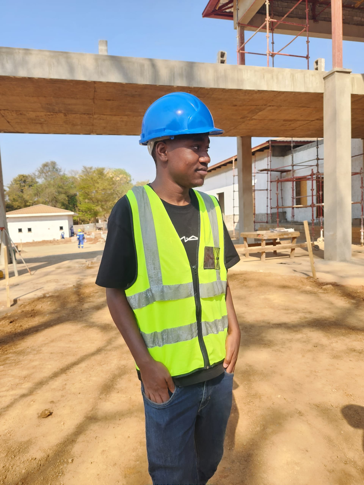

Curriculum vitae

Wongani Jiya
- Contact: +265-991316752
- Email: Wonganijiya55@gmail.com
- Github: wonganijiya55-arch
Professional summary
Civil engineering student & full-stack JavaScript developer — focused on infrastructure, innovation, and practical solutions.
Education
- BSc Civil Engineering — Your University — 2021 — present
Experience & Projects
- ICES Society Website — Lead developer: static site + registration system (Node/Express backend)
- Smart infrastructure monitoring — Concept & prototype (sensors + cloud dashboard)
Skill-set
Web technologies
- JavaScript (ES6+), Node.js, Express
- HTML5 &CSS3,Responsive Design
- Database: SQLite, Postgres
- Version Control: Git, GitHub
Civil Engineering technologies
- AutoCAD & Civil 3D
- Infrastructure design principles
- AI & Cloud concepts for infrastructure monitoring
I am a contiously learning individual with a passion for both civil engineering,web development and technology. I enjoy solving complex problems and am always looking for opportunities to apply my skills in innovative ways.